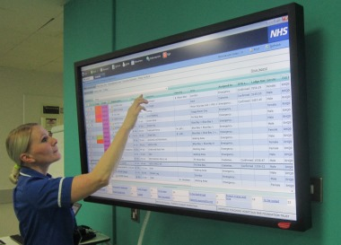

Staff training
Training to use the new systems will take place during 2015

However, staff can already familiarize themselves with the systems and how the changes will affect them by attending the change workshops and demonstrations. The main training period for each project will be during the eight to 12 weeks prior to the ‘Go live’ dates for each one.
However, we will be offering general IT training on a rolling programme over the next 12 months. If any staff have concerns about IT literacy skills, they should highlight this now with their line manager.
- Attend a demonstration or workshop
- Updates on this site
- Contact the programme team if you would like more details for your department
Training will include:
- Face to face practical sessions
- E-learning, tailored to job roles and tasks
- Supporting literature including crib sheets, flow charts and aid memoirs as follow up to formal training
Other support for staff will include:
- Series of FAQ to deal with reoccurring themes and problems
- Support from floor walkers at Go Live
- Back up team and named helpers available to give support
- Care Group Operational Change Leads ( to be appointed later this year)
The main focus will be on training sessions for small groups of staff within their work place. Staff will be booked onto the training sessions by their line managers, so service provision within clinical areas can be maintained.
Get in touch about trainingHospital of the Future Training Center
We are one of the first hospitals in the country to have a ‘Hospital of the Future’ innovation centre
The Hospital of the Future is a fully equipped clinical environment which includes our planned clinical information systems, so staff can experience, influence and familiarise themselves with how our business will operate in the future.
It is a showcase environment which recreates the patient pathway and demonstrates how technology will support the delivery of the three projects - EPR, EDMS and Clinical Portal. Staff are able to see how patient data flows through the system in practice and see the impact of interactions between care professionals and departments along the patient pathway. Some of our testing and staff training will also take place in our new Hospital of the Future.
Hospital of the Future is located on B floor of the Royal Hallamshire Hospital (where the former Admissions Assessment Unit (AAU) was located). This is a very exciting project as we will be one of the only hospitals in the country to benefit from this type of showcase area. This is an ideal place for people to come and see first-hand how we are changing the way we work.
We are also inviting our future suppliers to support the facility by using it to demonstrate future technologies.
To arrange a visit, please contact your Operational Change Manager (OCM).
Smart Cards
It is estimated that around 4,000 staff need to get a new Smartcard to get secure access to the new systems being implemented as part of Transformation Through Technology.

Do you have a smartcard?
You need your own up-to-date Smartcard to access a number of the systems we will be using in the future. These systems include Lorenzo, our new Electronic Patient Record (EPR), SystmOne, the Electronic Staff Record and Single Sign-On (SSO).
Smartcards or NHS Care Records Service (CRS) Cards - are not the same as your ID badge or door access cards
Is it up-to-date?
Look at the 10 digit number on the back of the card, if the number starts with 05 or 06 it is up to date and compatible with the systems. However, if it begins 03 or 04, it is an older version and will need to be replaced.
Does it have a 4 number PIN?
Each Smartcard should have an associated 4 number PIN (like a bank card PIN number). If yours has any other password, it will need resetting.
If you answered ‘No’ to any of the three questions above please contact the Systems Access Team on ext. 15269.
A mobile Smartcard drop-in service is now visiting wards and departments to issue new Smartcards to staff, find out more